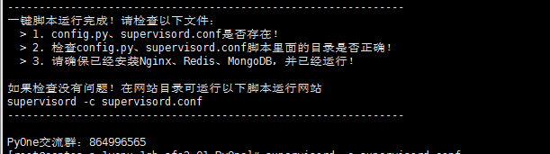

下载源码&一键安装
2018.11.19更新之后，新增了一键配置脚本。
一键脚本主要配置以下内容：
- 自动安装依赖包；
- 配置self_config.py和supervisord.conf；
- 配置开机启动；
- 自动安装aria2；
开始安装
默认在/root目录下进行操作！
下载源码
git clone https://github.com/abbeyokgo/PyOne.git
使用一键安装脚本
cd PyOne
sh install.sh
然后按照提示进行操作！
安装完成提示

安装过程中，会安装aria2，用于做onedrive网盘离线下载功能。
在安装aria2的过程中，需要设置用户名和密码；
- 用户名、密码用于登录YAAW管理界面；
- 密码还用于aria2c的secret，需在PyOne后台-基本设置-Aria2信息编辑里面设置该密码。
运行网站
使用一键安装脚本，并检查文件无误之后，运行下面的命令运行网站
supervisord -c supervisord.conf
然后看看是否可以访问：http://ip:34567
确保已经开启34567端口。